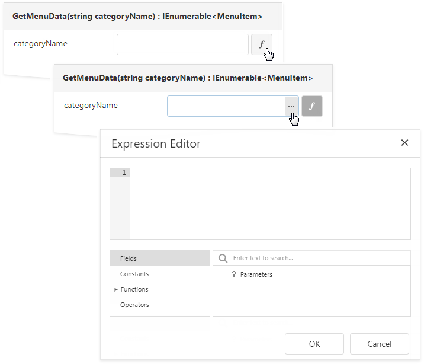

Specify Data Source Settings (Object)
This page appears if you selected Object on the previous page.

Choose an Object
Select a data object or constructor from the list. If you select a data object, its default constructor is used.

Choose a Data Member
Select the method that should provide data or select Entire Object to bind to the object's fields.

Configure Parameters
Specify constructor and/or data member parameters (optional).

You can use expressions to provide data source parameter values. Click the  button to switch the parameter's editor to the expression mode. Specify an expression in the parameter's editor or click the parameter's ellipsis button to launch the Expression Editor. You can use report parameters in expressions to specify an input value for a data source parameter.
button to switch the parameter's editor to the expression mode. Specify an expression in the parameter's editor or click the parameter's ellipsis button to launch the Expression Editor. You can use report parameters in expressions to specify an input value for a data source parameter.

To return to the value mode, click the parameter's marker and select Value from the popup menu.
Click Next to proceed.